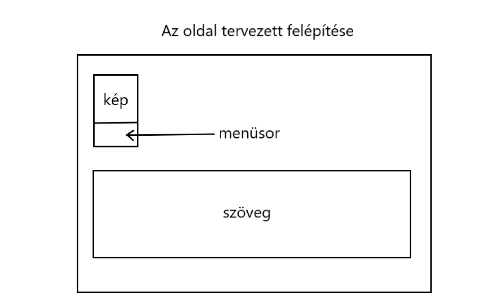

Tervezés, tervezés során fellépő nehézségek
Ez a feladat számomra eléggé nagy kihívást jelentett ugyanis ilyet még sosem csináltam, bár az egyetemen eddig itt töltött idő alatt már lassan hozzászoktam az ilyen típusú feladatokhoz. Sok órányi tutorial videó nézés után rávattem magam , hogy nekivágjak a munkának.
Kezdetben volt pár nehézség pl:nem tudtam a menüsort elkészíteni, nem tudtam a hátteret rendesen beállítani, de további keresgélések után megtaláltam a megoldást, ekkor már csak egy ideális no copyright-os háttérképet kellett keresnem. A weboldal elkészítése során felhasznált weboldalak:w3schools, youtube(tutorial videók), pexels(háttérkép). A használt szoftver a notepad++ volt.